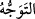
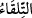
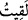
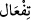
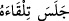

Kendiliğinden batıverdi ayağı hazineye
Allah meğer bekçiyi sebep kılmıştı
Geceleyin bekçinin korkusuyla bahçeye koşsun diye
O anda sebepleri yaratan Allah’a döndü, şöyle dedi:
Ey Rabbim, sen bekçiye merhamet et
Rabbim, bir dikeni bile hor görmeyeyim diye
Bu işi sebep kıldın
Öyleyse dünyada mutlak kötü yoktur
Şunu da bil ki kötü görecelidir
Yılanların zehri yılan için hayattır
Buna karşılık insan için bir ölümdür
Sudaki yaratıklara deniz bahçe gibidir
Karadakiler içinse ancak ölüm ve acıdır
Ne kadar sevimsiz olsa da seni sevgiline götüren bir kılavuzdur
İşte bu yüzden sevimli ve dosttur sana
Aslında her düşman ilacındır, iksirindir
Yararlıdır sana, gönlüne şifadır
Çünkü ondan bir boşluğa kaçarsın
Allah’ın lütfundan yardım dilersin
Hakikatte dostların düşmandır sana
Çünkü seni Hakk’ın huzurundan uzaklaştırıp meşgul ederler
Âşık, imtihan yolundan Hakk’a yönelince, korkar ve ehl-i dalâletten birinin kendisini
takip etmesinden endişelenip etrafı gözetler. Allah da bu kulunun vuslatı için, o kimseye
mâni olur. Zira kul Allah yolunda oldukça, korku ondan ayrılmaz. Allah Teâlâ’dan
kendisine vâsıl olmayı isteriz ki O, kendisinden istenilenlerin en hayırlısıdır.
22. Medyen’e doğru yöneldiğinde: Umarım, Rabbim beni doğru yola iletir, dedi.
“Medyen’e doğru yöneldiğinde:”
“__WORD__ kelimesi; yönelmek ve gitmek demektir. “__WORD__ kelimesi, “__WORD__ den “__WORD__
vezninde geniş anlamlı bir masdardır. Karşılaşma ve buluşma mânâlarına geldiği gibi,
zarf olarak sadece “karşısı, hizâsı” anlamına da gelir. Burada zarf mânâsında
kullanılmıştır. “__WORD__ denilir ve “karşısına, hizâsına oturdu” anlamına gelir.
Medyen, Kızıldeniz sâhili üzerinde olup Şuayb (a.s.)’ın memleketidir. İbrâhim